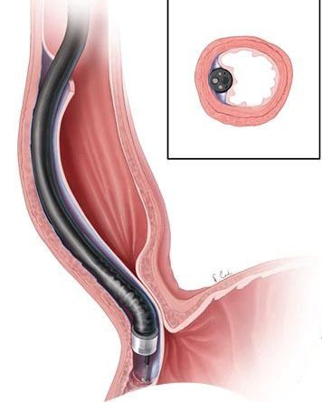

Things They Don't Tell You About Peroral Endoscopic Myotemy

The problem
This year I was diagnosed with achalasia. It's a rare condition in which nerve damage causes weak and poorly coordinated swallowing in the esophagus, including a reluctance of the lower esophageal sphincter, leading to the stomach, to properly relax at the appropriate moment.
This leads to difficulty swallowing, regurgitation, and a column of liquid sitting in the esophagus, which becomes distended, losing elasticity and tone. The cause of the nerve damage is unknown, and has probably been accumulating for decades. It's reasonable to assume this is mixed up in some way with various ailments of my guts over the years (celiac, eosinophilic esophagitis, chronic hiccups), but causal relationships are unknown.
A solution, of sorts
Peroral endoscopic myotomy (POEM) is a surgical procedure intended to allow the esophagus to drain properly, avoiding further distension. Surgery happens through a tube down the throat, from where they cut into the muscle wall of the oesophagus, then tunnel down to the outside of the lower esophageal sphincter. There, they cut some of the muscle, making the sphincter less tightly clenched, so that food can pass more easily.
For me, my symptoms were a nuisance, but perfectly endurable. The main goal of the procedure was preventative - reduction in future damage to my esophagus. Plus, there's an outside chance that maybe eliminating that standing fluid might improve other matters, such as reducing irritation which maybe causes my hiccups? Long shot, but worth a try.
There's a lot of information given to the patient through the process, but these are the things that were still surprises to me.
Day 0. The procedure.
I've undergone a lot of regular endoscopic inspections or biopsies. At some point, in London's splendid Imperial College Hospital, I discovered the cheat code is to ask to do these unsedated. It's a few minutes of slightly nightmarish discomfort, to watch a burly gentleman hand-over-hand several feet of black rubber garden hose directly into your mouth. But the payoffs are that without any anesthetic, there's no need to fast, the procedure itself is simpler and safer, and best of all, recovery time is much reduced. Given a few minutes to compose yourself, you can cycle or drive yourself home right afterwards, making it a 45 minute appointment, instead of writing off most of the day.
However, going unsedated for the more substantial POEM obviously isn't an option. It requires more than the simple sedation I've experienced before, since apparently there's a phase at the end where they check you're regaining consciousness and are able to breathe for yourself before they remove the apparatus that's been breathing for you while you are paralyzed for the procedure. This is the sort of detail that is kindly elided from the regular patient briefing, which only came up because we were asking questions.
I only remember coming around sometime after that point, and my first thought, unplanned, was to test whether I could perform square and cube roots in my head. Apparently that's my brain's idea of a power-on self test. I could do small integers, like 27 -> 3, but had the presence of mind enough to see that's just relying on remembered sequences. I was able to envision the process to do the calculation for something which isn't a cube, like 28, but I failed to actually execute any iterations of it.
I said hello to a nurse sat beside me, but resisted the urge to chatter at her about my mental state. Somehow, even I could see that from her perspective, that would be like talking to drunk people. So now I'm doing it at you instead.
After a while they rolled me into my own room, and stuck a big pad over my butt. Foreshadowing! I fuzzily thought. I stayed in hospital overnight, for tests the next day. Forever grateful for Suze's visits even though I wasn't the best of company. :-)
My hiccups didn't reappear through the first few hours of my recovery, even though I spent the time propped upright in bed. This is pretty unusual - they usually return within seconds of me sitting up. But when they did return, they were pretty painful. What I call "hiccups" is partly a spasm of the esophagus itself - precisely where I'd just been cut and then clamped and sutered back together. So I asked the nurse to dial up the pain meds, at first with breezy British grit, and then with increasingly wild eyes and white knuckles as they took a while to figure out a few local administrative issues, like where the person with the keys to the drugs locker had gone. Rode out the rest of the day in style.
Day 1. Restart the line
I'd brought a bunch of things for my two day hospital stay, books and media and headphones and my own cozy pajamas to wear while garrulously socializing with staff and adjacent patients. That was all a total waste of time. I was a write off the entire time I was there, not able to muster the bandwidth even to watch TV. I saw a single episode of Schitt's Creek at one point because Suze kindly propped it up in front of me, but I couldn't manage a 2nd. I just dozed, and was wheeled to a barium x-ray, to check I wasn't leaking anywhere untoward.
At some point during this day, my digestive tract started up again. It became apparent that it had just been on strike, inactive, since the surgery. I felt it ripple distressingly back into action, along with some impressive gurgles. The big pad they'd stuck on me the day before turned out not to be vital in this instance, but I can very much understand how it often might be.
The nurse introduced me to a plastic device for measuring and exercising my ability to inhale deeply, on which I could occasionally surpass the initial expectation of 1,000 points.
My ambitions for the day were to get out of bed and take a 2 minute walk, and later in the day to tolerate my first drinks, some water and fruit juices, sufficiently to get approved to go home. Leaving hospital with some prescription, gluten free, clear liquid pain killers proved to be an impossible administrative nightmare. Nobody's fault, the system is broken. The concept of "insurance" for healthcare is inherently dysfunctional.
Day 2. Home again
At home for five days of a clear liquid diet. This means water, strained fruit juices & drinks without suspensions (i.e. no particles floating in it to make it opaque), tea or coffee without milk, clear broths. Also, slightly bizarrely, jello, since it may be eaten while solid, but at room (or body) temperature, it's a liquid. I demurred on Suze's threat to make jello shots.
Ambitions for today were to rise from the sofa for a shower, and a walk or two around the inside of the house. Scoring 1,500 points on the breathe-o-meter. Importantly, I now have it together enough to be able to watch some dumb TV.
Day 3. Outdoors.
Ambitions today were to take a walk or two around our yard. Scoring 2,000 points on the breathe-o-meter! Yay, progress. Able to concentrate enough to read.
Day 4.
Ambitions today were to take a couple of walks around the block. Scoring 3,500 points on the breathe-o-meter. I have no idea what my baseline was.
Day 5.
First full day and night without any pain killers. Ambitions for today were to take it easy and not mow the lawn (check!). Might have to get someone in to do it for us. I'd be writhing in guilt if Suze had to go out and manhandle our temperamental mower around. 4,500 on the breathe-o-meter.
Day 6.
Back to work - from home, at a desk.
Over lunch I visit the hospital for an x-ray and more tests. I was hoping to graduate to a soft food diet today, but surgeon says that, although he's happy with my progress, out of an abundance of caution he's going to keep me on clear liquids until day 9. Then a soft food diet for six weeks. C'est la vie. Back home to more apple juice. At least I'm still under instructions to take it easy, so retain my excuse for not mowing the lawn...